NIST RESEARCH PROJECTS
Overview
The mmWave imaging system consists of visualizing images by recording mmWaves scattering off of objects.
Old System
The original system consisted of ... that rives a beam to points along a grid, and measure the power produced by Radio Frequency (RF) energy scattering off the object at each point. 90 & 200 GHz0 We set up a scanning system that d We then create a two dimensional graph of position (X,Y) versus power over a object space. We will be processing the scan data to eventually create mmWave images of the object space. 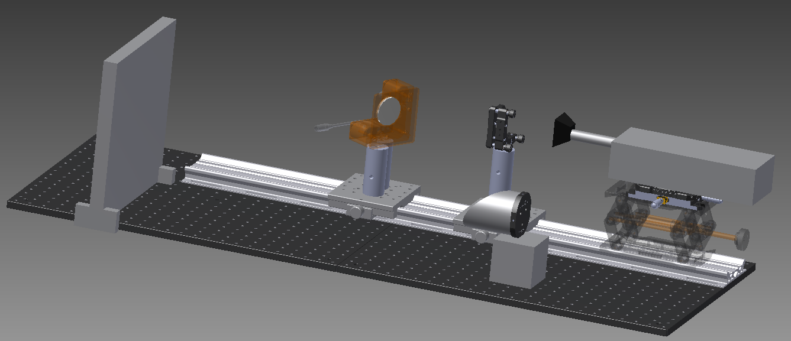 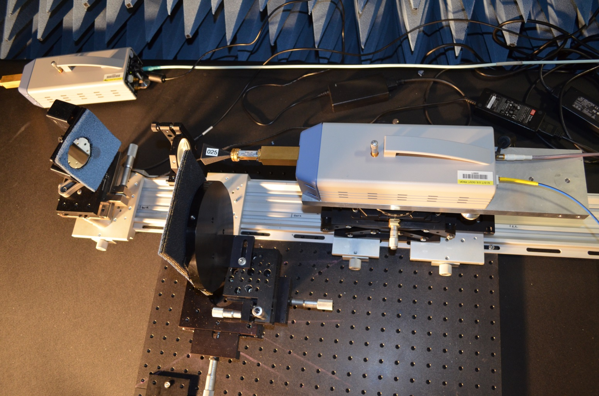 some resultd from the old system 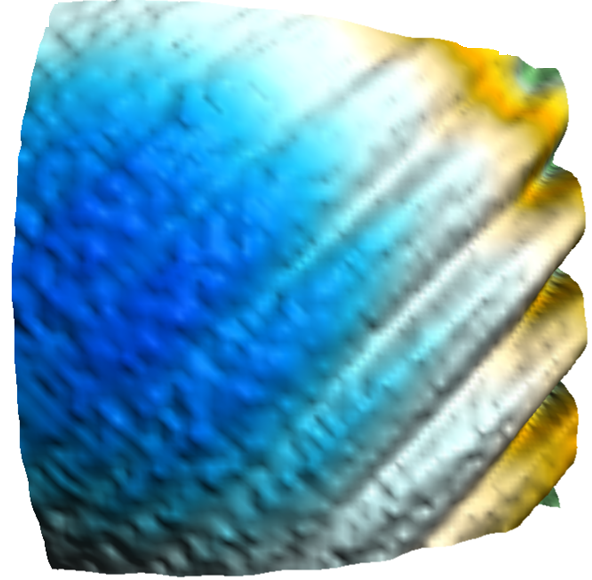 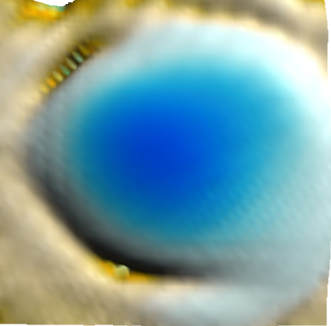 These are two different images of the same sample taken with different receiving heads. The image on the left has a high amount of noise. The image on the right is much cleaner, making it much easier to analyze These are images of RF waves being projected directly at the receiver from the origin of the scanning grid. The image on the left displays the interference that we were able to eliminate through realignmenNew System
The new system freq? The new set-up involves just one mirror to project the radiated RF energy. This imaging system is used to visualize mmWave scattering off of objects. To improve the previous work we added an x-y stage to control the position of the frequency converter while keeping the mirror stationary which we believed would help improve alignment. Also, with the frequency converter on the x-y stage we were able to do an electrical alignment instead of a laser alignment. 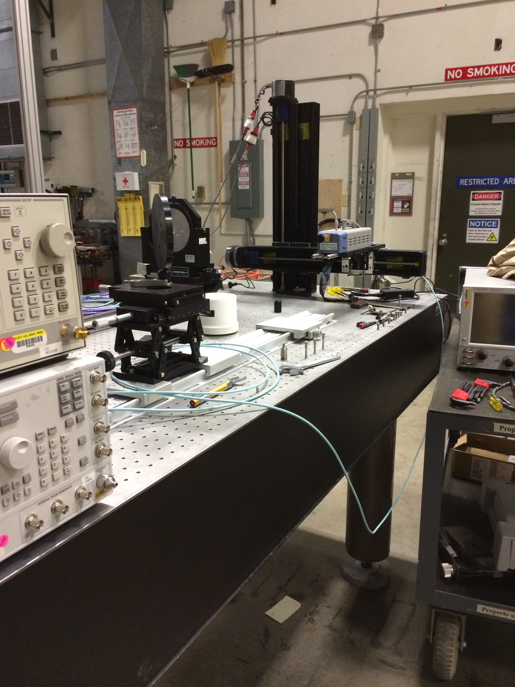 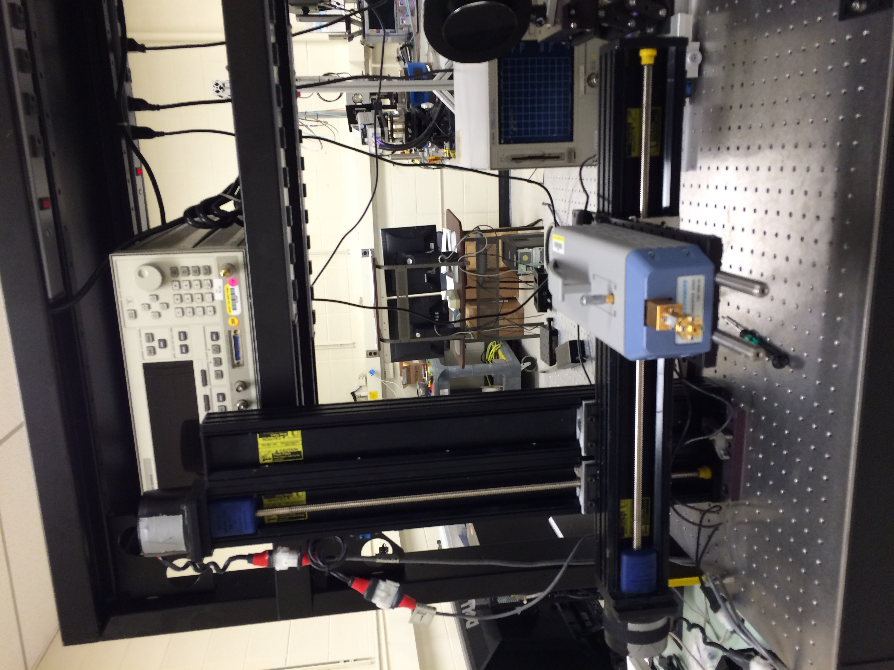 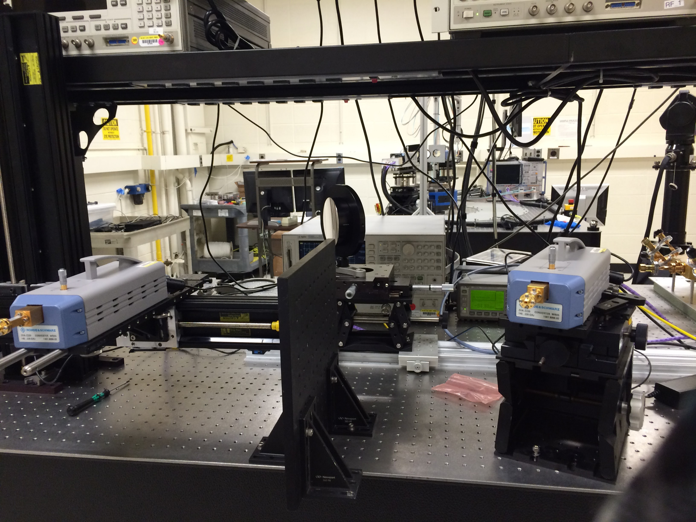 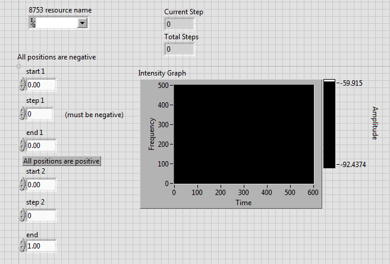 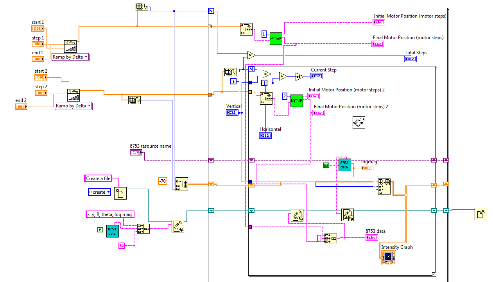New System Code
Labview data collection Matlab image genertion The code I generated drives the motor over a specified x-y grid and measures RF energy at each point on the grid.
I created an automated system of a 90-140 GHz power reference. By setting up an automated broadband millimeter wave power reference we are able to establish a stable reference output power used to calculate electric field linearity for
atomic based field probe research. The figure to the right shows the set up of the frequency convertor connected to a power meter to regulate and control power levels.
The LabVIEW code below shows how the system was run. First the user can choose the desired frequency band.
The syste consisted of a frequency converter connected to two signal generators (SGs), a spectrum analyzer (SA), a mmWave power meter and a RF power meter.
The frequency converter multiplies the frequency of SG1 to generate the mmWave power signal and uses SG2 to down-convert a portion of the signal to a detectable frequency.
SG1 is needed to provide a +7 dBm signal at the correct frequency for signal generator.
SG2 ...(same)
RF power meter reads the output of the sgs
spec an measures the sampled signal
First the power levels needed to be set for the SGs. This was done by hooking up a RF power meter to the SGs and running LabView program to find the calibrated power needed (+7dBm).
The process:
LabVIEW drivers were written to contro the SGs and read the power meters.
A LB prog was written to control the SGa to determine the required power needed to deliver the manufacturer specified +7 dBm at the LO and RF inputs to the frequency converters.
[code]
Another was written to calculate the power needed to be sent to the generators for a selected frequency in a specified bandwidth by using the previously generatedspreadsheet.
[code]
Application:
THe freq converter output is directly measured with the mmWave power meter. It is compared with the sampled power measured by the SA. THis allows the output power of the converter to be inferred from the SA without the mmWave power meter.
Now have an adjustable, calibrated power source across 90-140GHz freq range.
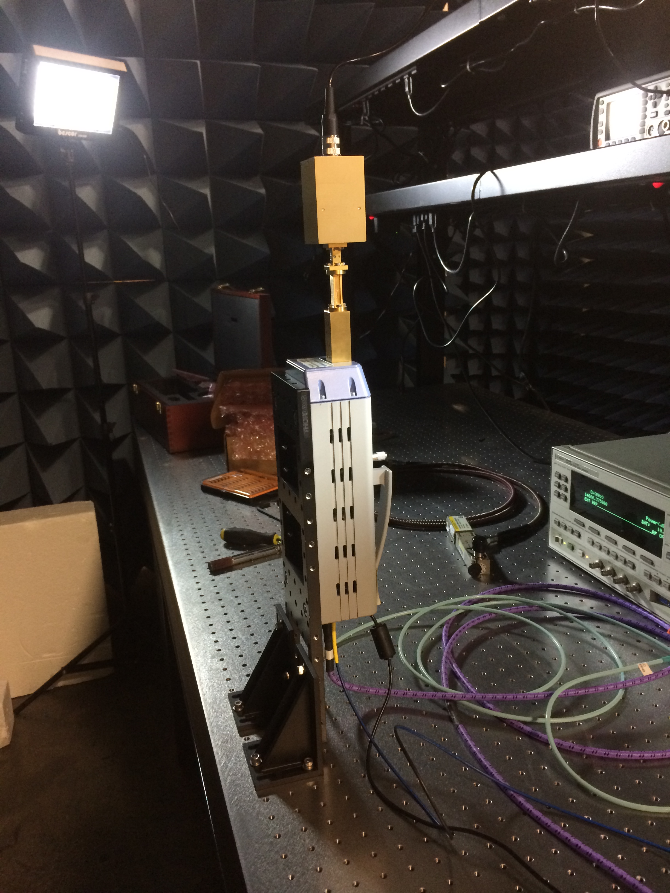
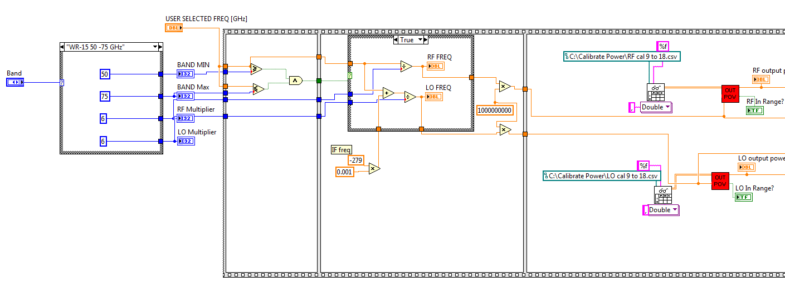
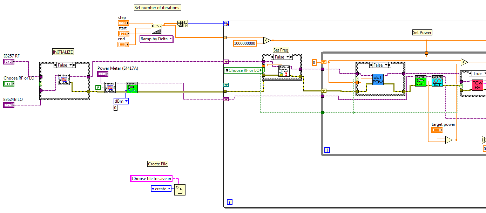
, I am also in the process of writing LabVIEW code to profile a laser beam. By capturing
an image of the laser beam with a webcam the code I develop will allow for characteristics of the
beam to be found through a Gaussian fit model. I continued my work on the laser beam profiler
by writing control and acquisition software. The LabVIEW code I wrote profiles a laser beam
with the use of a webcam by creating perpendicular lines through the width and height of the
oval shaped beam. This is done by scanning through the image with lines and finding the line
that has the maximum value of intensities and making a perpendicular line to that line. The
intensity values across these lines allow for characteristics of the beam to be found through a
Gaussian fit model.
The laser
beam profiler captures an image of the laser beam with a webcam and the code I developed
allows for characteristics of the beam to be found through a Gaussian fit model.
research. I was also involved in designing WR-08 horn antennas to be manufactured
via 3D printing. These horns will be measured and compared to standard horns to test how
accurate 3D printing can be at a small scale level.
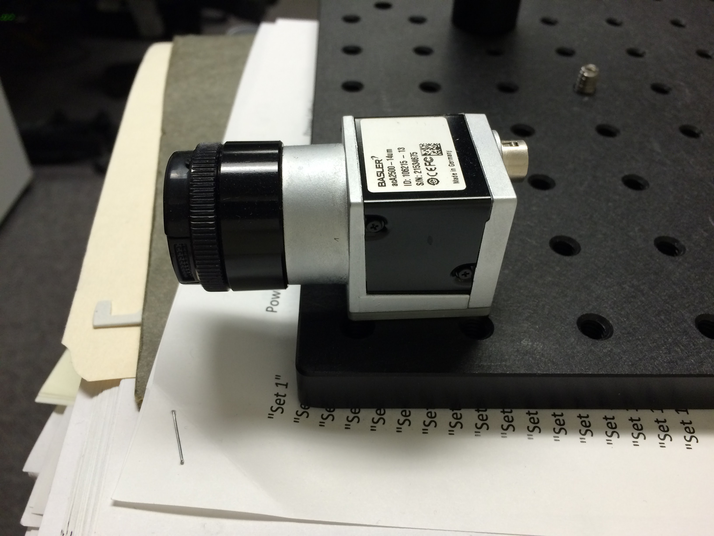
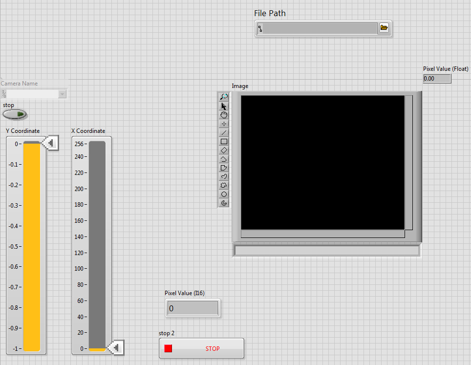
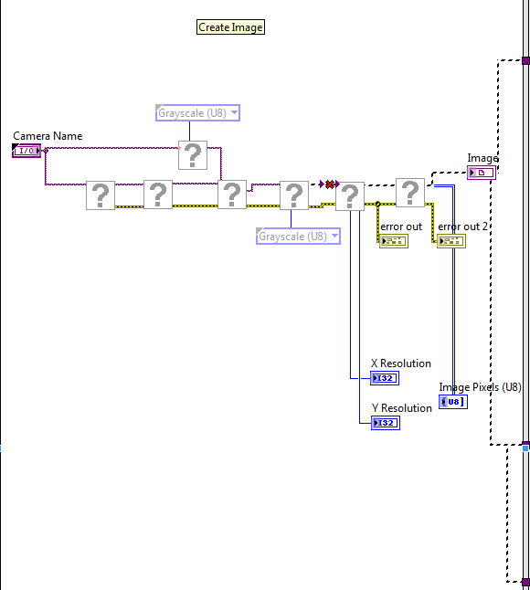
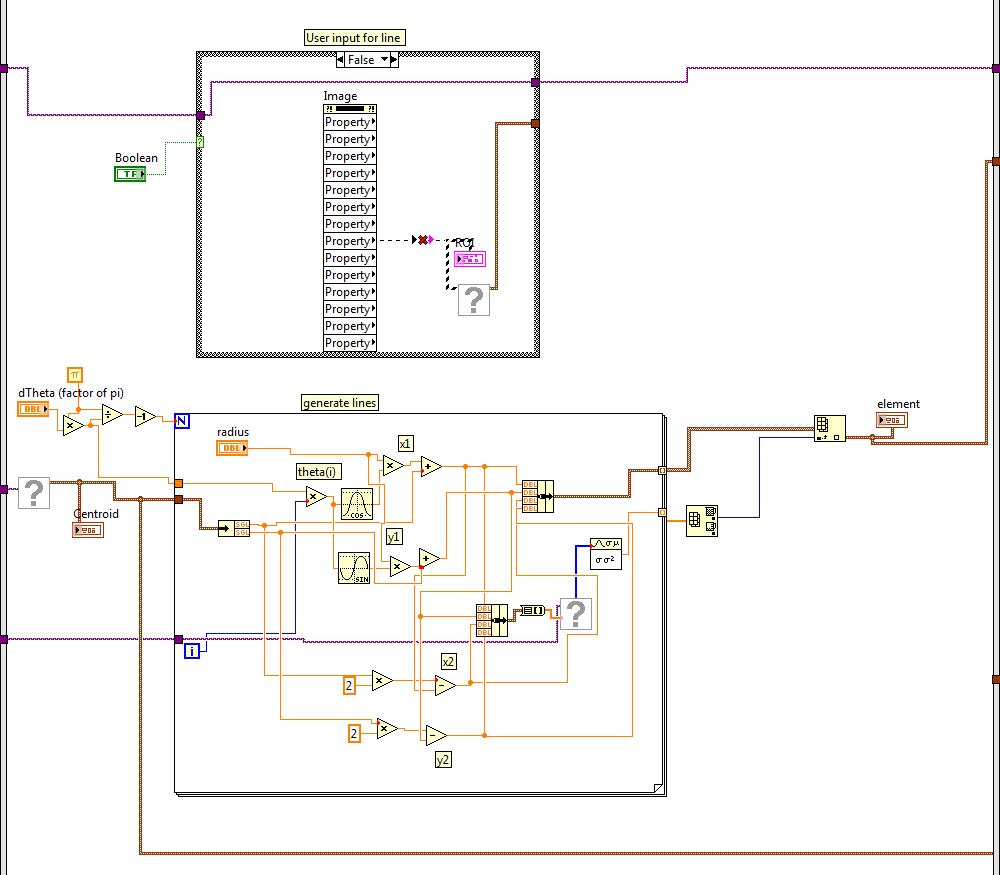
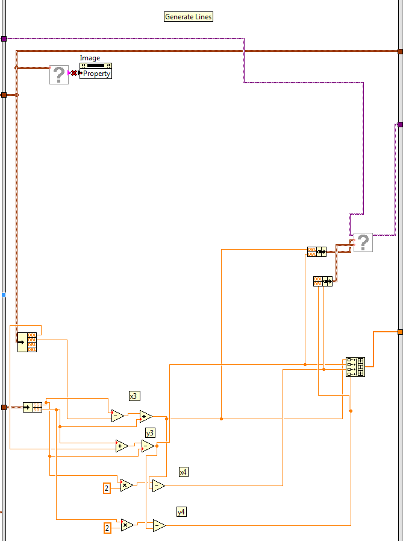
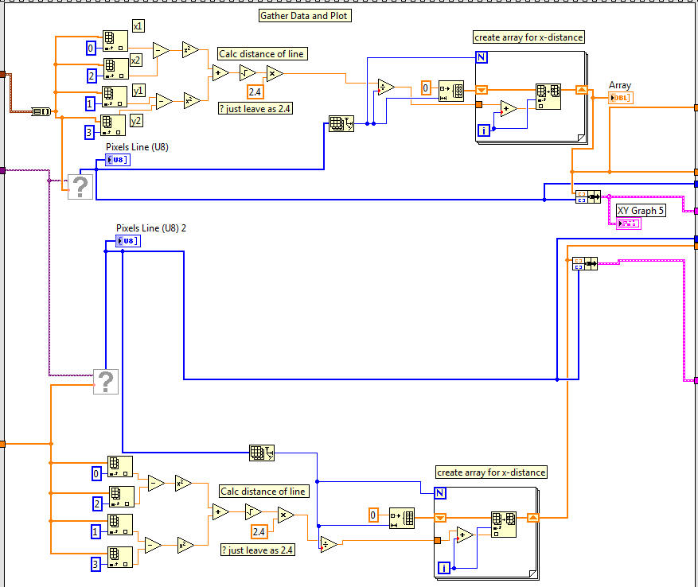
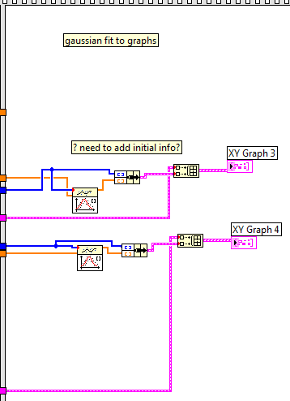